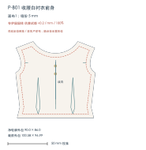
P-B01 · 收腰白衬衣前身 裁剪数量：面布1- 面布
- 高密纯棉细布 Lawn（M5，目标 75–90 g/m²）
原白，不印花；整片；裁 1 片
无独立里布。
不加整片衬。
选材理由：细密薄棉用于收腰白衣，控制省道与叠穿厚度。
拟采用，待样布确认 · 点击衣片放大花纹、尺寸与材质MARCH 7TH / DOLL GARMENT WORKSHOP
公式服花纹直接显示在每层衣服和各编号衣片上；每片同时记录采用的材质、里布、辅衬及印花安排。
带花纹看稿＋逐片材质 / v0.4 · 衣片结构 v0.2 / mm
胸围 170、腰围 128、肩宽 86 mm 等来自已登记的商品标称；缺少的长度采用明确列出的试版假设。
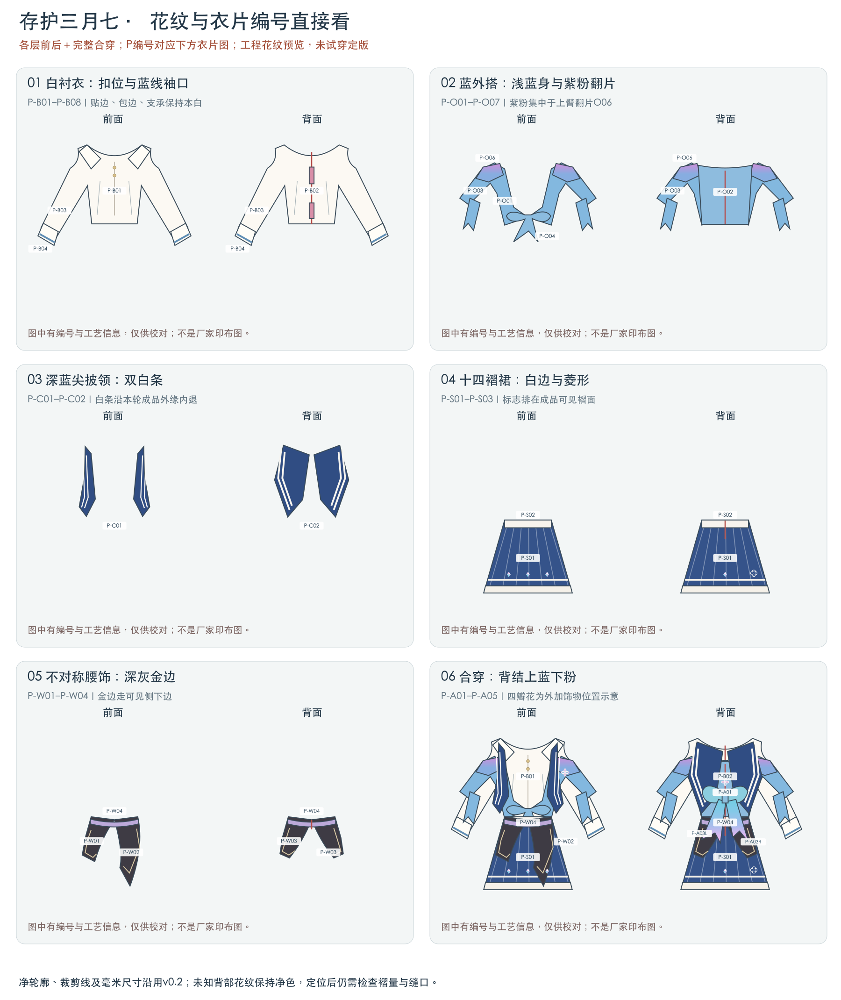
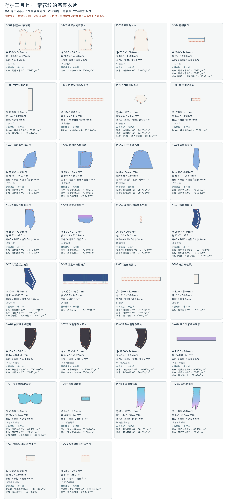
每片分别记录面布、里布、辅衬、目标克重及印花安排；不需要的里布或衬也有说明。材质为本轮拟采用的取样方案，商品依据见材料目录。裁几片、是否镜像，以单片标注为准。

P-B01 · 收腰白衬衣前身 裁剪数量：面布1无独立里布。
不加整片衬。
选材理由：细密薄棉用于收腰白衣，控制省道与叠穿厚度。
拟采用，待样布确认 · 点击衣片放大花纹、尺寸与材质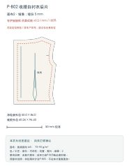
P-B02 · 收腰白衬衣后片 裁剪数量：面布2，镜像无整片里布；后开口由P-B05贴边遮针脚。
扣位薄衬计在P-B05，不在本片重复叠加。
选材理由：与前身同批薄棉，后中保持柔软可开。
拟采用，待样布确认 · 点击衣片放大花纹、尺寸与材质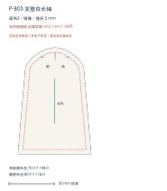
P-B03 · 完整白长袖 裁剪数量：面布2，镜像无独立里布。
不加衬；袖底以P-B08收净。
选材理由：薄棉有利于袖山吃势和袖摆小抽褶。
拟采用，待样布确认 · 点击衣片放大花纹、尺寸与材质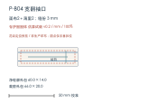
P-B04 · 宽翻袖口 裁剪数量：面布2＋薄里2面2配薄里2，里侧原白。
仅扣位需要时试I1；不把整个宽袖口做硬。
选材理由：和白袖同布，蓝条定位在面层，薄里包净边与针脚。
拟采用，待样布确认 · 点击衣片放大花纹、尺寸与材质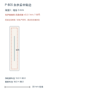
P-B05 · 白衣后中贴边 裁剪数量：薄里2本片就是后中薄贴边，共2；不另裁整片里身。
原组装要求扣位薄衬，由本贴边承担；局部数量随扣段，不按整片加衬。
选材理由：原白薄棉遮针脚，局部衬分散反复开扣拉力。
拟采用，待样布确认 · 点击衣片放大花纹、尺寸与材质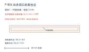
P-B06 · 白衣领口斜裁包边 裁剪数量：面布1，45度斜裁无额外里布；现有面布1作为对折包边。
不加衬。
选材理由：同批薄棉斜裁沿领曲线转弯，保持包边轻薄。
拟采用，待样布确认 · 点击衣片放大花纹、尺寸与材质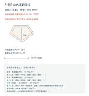
P-B07 · 白色宽翻领片 裁剪数量：面布2＋薄里2，镜像左右面2配薄里2，均原白。
小样软塌时才局部试I1；不预设整片粘衬。
选材理由：双层薄棉形成翻领，和白衣保持相同白色。
拟采用，待样布确认 · 点击衣片放大花纹、尺寸与材质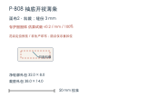
P-B08 · 袖底开衩薄条 裁剪数量：面布2，斜裁无额外里布；原面布2改以包边用途登记。
不加衬。
选材理由：薄斜条包袖底开衩，避免袖口根部堆厚。
拟采用，待样布确认 · 点击衣片放大花纹、尺寸与材质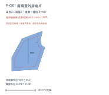
P-O01 · 露肩蓝外搭前片 裁剪数量：面布2＋薄里2，镜像面2配薄里2；各层分别排料，按原清单镜像条件。
不加整片衬，保留外搭和翻片垂感。
选材理由：薄仿双绉使外搭前片垂顺，里层用匹配净色控制露里。
拟采用，待样布确认 · 点击衣片放大花纹、尺寸与材质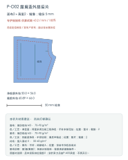
P-O02 · 露肩蓝外搭后片 裁剪数量：面布2＋薄里2，镜像面2配薄里2；各层分别排料，按原清单镜像条件。
后中实际扣位局部I1；别针承力另由P-A05承担，不跨开口。
选材理由：薄仿双绉使外搭后片垂顺，里层用匹配净色控制露里。
拟采用，待样布确认 · 点击衣片放大花纹、尺寸与材质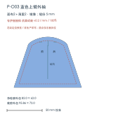
P-O03 · 蓝色上臂外袖 裁剪数量：面布2＋薄里2，镜像面2配薄里2；各层分别排料，按原清单镜像条件。
不加整片衬，保留外搭和翻片垂感。
选材理由：薄仿双绉使蓝外袖垂顺，里层用匹配净色控制露里。
拟采用，待样布确认 · 点击衣片放大花纹、尺寸与材质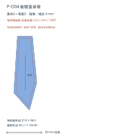
P-O04 · 前腰蓝系带 裁剪数量：面布2＋薄里2，镜像面2配薄里2；各层分别排料，按原清单镜像条件。
不加整片衬，保留外搭和翻片垂感。
选材理由：薄仿双绉使前系带垂顺，里层用匹配净色控制露里。
拟采用，待样布确认 · 点击衣片放大花纹、尺寸与材质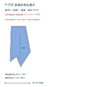
P-O05 · 蓝袖外侧尖垂片 裁剪数量：面布2＋薄里2，镜像面2配薄里2；各层分别排料，按原清单镜像条件。
不加整片衬，保留外搭和翻片垂感。
选材理由：薄仿双绉使袖尖垂片垂顺，里层用匹配净色控制露里。
拟采用，待样布确认 · 点击衣片放大花纹、尺寸与材质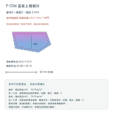
P-O06 · 蓝紫上臂翻片 裁剪数量：面布2＋薄里2面2配薄里2；各层分别排料，按原清单镜像条件。
不加整片衬，保留外搭和翻片垂感。
选材理由：薄仿双绉使上臂翻片垂顺，里层用匹配净色控制露里。
拟采用，待样布确认 · 点击衣片放大花纹、尺寸与材质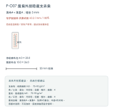
P-O07 · 露肩外搭隐藏支承条 裁剪数量：薄布4＋薄里4原薄布4＋薄里4，均用M5素白；不是4片衬布。
不另加衬，固定端按原设计缝牢。
选材理由：隐藏支承条需要轻薄无弹布层，连接本侧白衣与蓝外搭。
拟采用，待样布确认 · 点击衣片放大花纹、尺寸与材质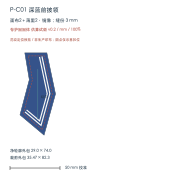
P-C01 · 深蓝前披领 裁剪数量：面布2＋薄里2，镜像面2配M3薄里2，不用双层M2增厚。
先试无衬；仅局部软塌时用I1。
选材理由：面层承载清晰白条，较薄净色里层降低尖角翻缝厚度。
拟采用，待样布确认 · 点击衣片放大花纹、尺寸与材质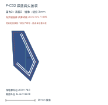
P-C02 · 深蓝后尖披领 裁剪数量：面布2＋薄里2，镜像面2配M3薄里2，不用双层M2增厚。
先试无衬；仅局部软塌时用I1。
选材理由：面层承载清晰白条，较薄净色里层降低尖角翻缝厚度。
拟采用，待样布确认 · 点击衣片放大花纹、尺寸与材质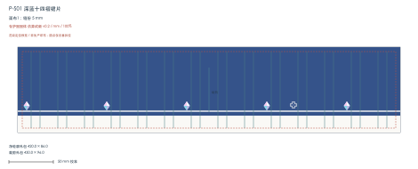
P-S01 · 深蓝十四褶裙片 裁剪数量：面布1原清单无独立里布，不增裙里。
不加衬；褶形按印后样布测试。
选材理由：薄塔夫作为十四褶裙形状候选，先检查细褶体积与反光。
拟采用，待样布确认 · 点击衣片放大花纹、尺寸与材质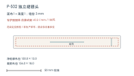
P-S02 · 独立裙腰头 裁剪数量：面布1＋薄里1面1＋薄里1，选原允许的M5路线。
后扣段局部I1，其余腰头保持薄软。
选材理由：净色紧密薄棉承接褶量；无需在隐藏腰头印裙面花。
拟采用，待样布确认 · 点击衣片放大花纹、尺寸与材质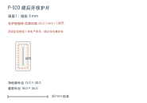
P-S03 · 裙后开衩护片 裁剪数量：薄里1原薄里1就是开衩护片，不再添加里层。
不加衬。
选材理由：柔软原白护片覆盖开衩内侧，不承担后扣主拉力。
拟采用，待样布确认 · 点击衣片放大花纹、尺寸与材质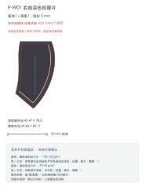
P-W01 · 右前深色短腰片 裁剪数量：面布1＋薄里1面1配薄里1，沿用原镜像/方向要求。
默认不加衬；上端固定先试样。
选材理由：细斜纹容纳深色边纹，薄仿双绉里层让自由侧下缘不堆厚。
拟采用，待样布确认 · 点击衣片放大花纹、尺寸与材质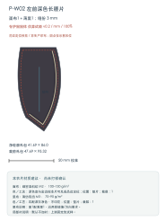
P-W02 · 左前深色长腰片 裁剪数量：面布1＋薄里1面1配薄里1，沿用原镜像/方向要求。
默认不加衬；上端固定先试样。
选材理由：细斜纹容纳深色边纹，薄仿双绉里层让自由侧下缘不堆厚。
拟采用，待样布确认 · 点击衣片放大花纹、尺寸与材质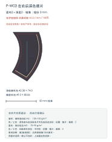
P-W03 · 左右后深色腰片 裁剪数量：面布2＋薄里2，镜像面2配薄里2，沿用原镜像/方向要求。
默认不加衬；上端固定先试样。
选材理由：细斜纹容纳深色边纹，薄仿双绉里层让自由侧下缘不堆厚。
拟采用，待样布确认 · 点击衣片放大花纹、尺寸与材质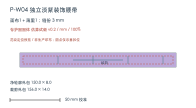
P-W04 · 独立淡紫装饰腰带 裁剪数量：面布1＋薄里1面1＋薄里1；薄里为M3，非再裁一层M4缎面。
后扣局部I1，不贯穿缝住白衣或裙腰。
选材理由：缎面呈现淡紫色带，薄里包边并减少腰部叠层体积。
拟采用，待样布确认 · 点击衣片放大花纹、尺寸与材质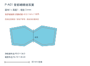
P-A01 · 背部蝴蝶结双翼 裁剪数量：面布1＋薄里1面1＋薄里1；翻面可见用匹配净色。
默认保留柔软翼形；需定形仅试局部I1，针座由P-A04承力。
选材理由：缎面用于蝶翼光泽，薄里避免整只蝶结双缎过厚。
拟采用，待样布确认 · 点击衣片放大花纹、尺寸与材质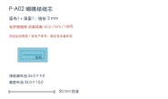
P-A02 · 蝴蝶结结芯 裁剪数量：面布1＋薄里1面1＋薄里1。
不再加衬；背面连接P-A04已含承力布和薄衬。
选材理由：薄里使小结芯围合时减少层数体积。
拟采用，待样布确认 · 点击衣片放大花纹、尺寸与材质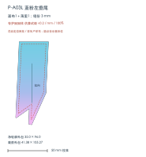
P-A03L · 蓝粉左垂尾 裁剪数量：面布1＋薄里1本片独立面1＋薄里1；左右各自排料，不合并为同长镜像。
不加衬，保持垂尾流动。
选材理由：缎面表现渐变；翻面可见的较薄里布减少露白与边缘卷曲。
拟采用，待样布确认 · 点击衣片放大花纹、尺寸与材质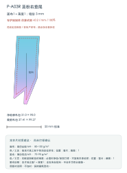
P-A03R · 蓝粉右垂尾 裁剪数量：面布1＋薄里1本片独立面1＋薄里1；左右各自排料，不合并为同长镜像。
不加衬，保持垂尾流动。
选材理由：缎面表现渐变；翻面可见的较薄里布减少露白与边缘卷曲。
拟采用，待样布确认 · 点击衣片放大花纹、尺寸与材质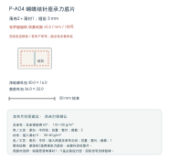
P-A04 · 蝴蝶结针座承力底片 裁剪数量：薄布2＋薄衬1原薄布2是两层承力底布，无额外印花里片。
保留原清单薄衬1；I1是必备设计层，实际货号仍待取样。
选材理由：本轮局部承力建议：原清单概略M5改选较稳的M7府绸承接针座缝孔载荷；原薄布2、薄衬1数量不变。先核验双层厚度，不把针座仅固定在薄缎。
拟采用，待样布确认 · 点击衣片放大花纹、尺寸与材质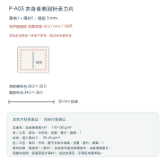
P-A05 · 衣身单侧别针承力片 裁剪数量：薄布1＋薄衬1原薄布1＋薄衬1；安装在外搭本侧里层内，无新增整里片。
保留原设计薄衬1；仅该支承区，不跨后中魔术贴。
选材理由：本轮局部承力建议：原清单概略M5改选M7稳布分散别针局部拉力；原薄布1、薄衬1数量不变。只固定一侧承力区，不跨魔术贴开口。
拟采用，待样布确认 · 点击衣片放大花纹、尺寸与材质带花纹看稿＋逐片材质 / v0.4 · 衣片结构 v0.2 / mm
尚无万代娃体实测围度：本套使用独立列出的假设设计基准，可替换参数重出衣片；不是已确认适配万代的成衣版。
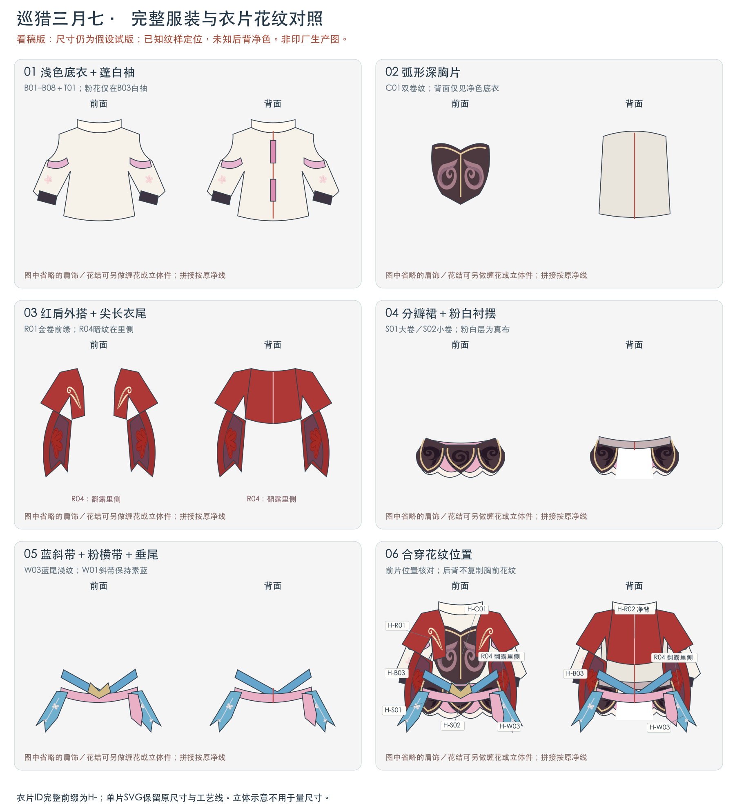
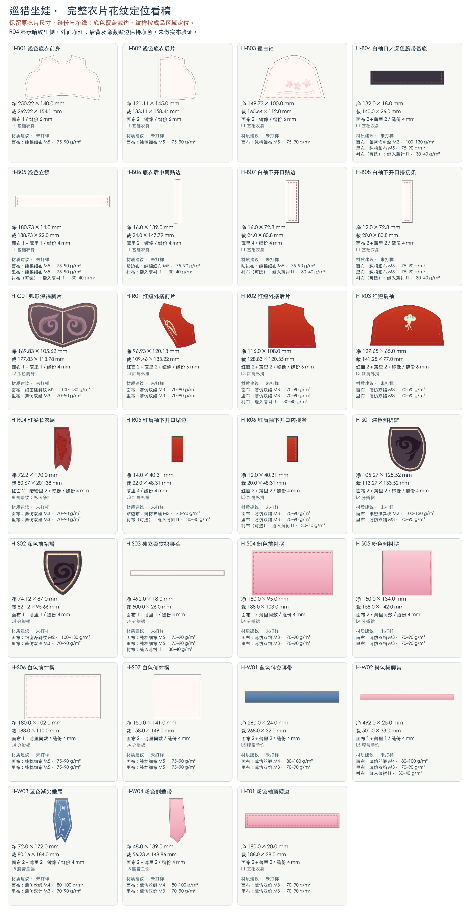
每片分别记录面布、里布、辅衬、目标克重及印花安排；不需要的里布或衬也有说明。材质为本轮拟采用的取样方案，商品依据见材料目录。裁几片、是否镜像，以单片标注为准。
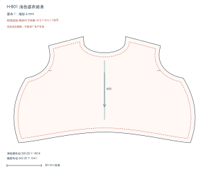
H-B01 · 浅色底衣前身 裁剪数量：面布 1无独立里布。
不加衬。
选材理由：薄棉基础层在坐姿腹部保持柔软。
拟采用，待样布确认 · 点击衣片放大花纹、尺寸与材质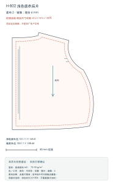
H-B02 · 浅色底衣后片 裁剪数量：面布 2，镜像无整片里身；后中由H-B06薄贴边覆盖。
扣位衬计入H-B06，不重复整片加衬。
选材理由：与前身同批薄棉，后中可开且下背保持柔软。
拟采用，待样布确认 · 点击衣片放大花纹、尺寸与材质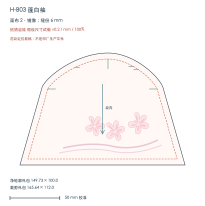
H-B03 · 蓬白袖 裁剪数量：面布 2，镜像无独立里布；袖下由H-B07/H-B08收净。
袖身不加衬。
选材理由：薄棉容纳袖山吃势与袖摆抽褶，图案避开袖下开口。
拟采用，待样布确认 · 点击衣片放大花纹、尺寸与材质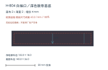
H-B04 · 白袖口／深色腕带基底 裁剪数量：面布 2＋薄里 2原面2＋薄里2；将原允许的深色外层落实到现有面片M2，里层M5，不增第三层。
仅扣位需要时局部I1。
选材理由：深色面与清晰腕带边纹一致，原白薄里隔开印花面和玩偶。
拟采用，待样布确认 · 点击衣片放大花纹、尺寸与材质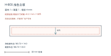
H-B05 · 浅色立领 裁剪数量：面布 1＋薄里 1原面1＋薄里1，均用原白薄棉。
先试无衬，仅领端或形状确有需要时局部I1。
选材理由：轻薄双层便于立领翻净，避免颈根过硬。
拟采用，待样布确认 · 点击衣片放大花纹、尺寸与材质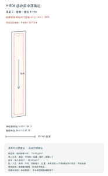
H-B06 · 底衣后中薄贴边 裁剪数量：薄里 2，镜像原薄里2镜像，作为后中贴边。
扣段局部I1；不从领口整条铺到臀下。
选材理由：贴边遮针脚，局部衬分散开扣拉力。
拟采用，待样布确认 · 点击衣片放大花纹、尺寸与材质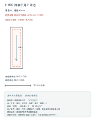
H-B07 · 白袖下开口贴边 裁剪数量：薄里 4原薄里4作为两袖两侧贴边。
需要时仅毛圈小段加I1；下搭带的支承归H-B08。
选材理由：薄棉收净可开的袖底，保留玩偶手部穿脱空间。
拟采用，待样布确认 · 点击衣片放大花纹、尺寸与材质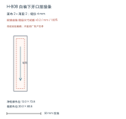
H-B08 · 白袖下开口搭接条 裁剪数量：面布 2＋薄里 2原面2＋薄里2，不与H-B07重复。
扣件拉扯使布变形时才局部I1，不整条加硬。
选材理由：双层薄棉构成独立搭接条，伸入上搭侧而不占袖身围度。
拟采用，待样布确认 · 点击衣片放大花纹、尺寸与材质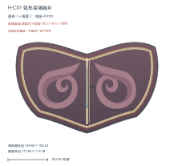
H-C01 · 弧形深褐胸片 裁剪数量：面布 1＋薄里 1原面1＋薄里1，M2面配M3薄里。
默认不加衬；不把胸片做成硬甲。
选材理由：细斜纹呈现深色细线，柔软薄里适应坐姿腹部曲面。
拟采用，待样布确认 · 点击衣片放大花纹、尺寸与材质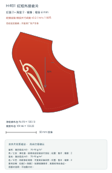
H-R01 · 红短外搭前片 裁剪数量：红面 2＋薄里 2，镜像红面2＋薄里2，按原镜像要求；薄里封净自由边。
不加整片衬。
选材理由：薄仿双绉用于红外搭面与匹配里层，保持肩袖和敞襟垂感。
拟采用，待样布确认 · 点击衣片放大花纹、尺寸与材质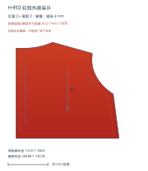
H-R02 · 红短外搭后片 裁剪数量：红面 2＋薄里 2，镜像红面2＋薄里2，按原镜像要求；薄里封净自由边。
后中扣段局部I1，不连带里面白衣。
选材理由：薄仿双绉用于红外搭面与匹配里层，保持肩袖和敞襟垂感。
拟采用，待样布确认 · 点击衣片放大花纹、尺寸与材质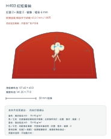
H-R03 · 红短肩袖 裁剪数量：红面 2＋薄里 2，镜像红面2＋薄里2，按原镜像要求；薄里封净自由边。
不加整片衬。
选材理由：薄仿双绉用于红外搭面与匹配里层，保持肩袖和敞襟垂感。
拟采用，待样布确认 · 点击衣片放大花纹、尺寸与材质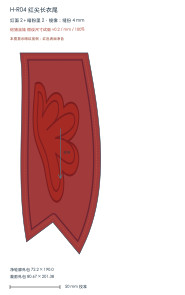
H-R04 · 红尖长衣尾 裁剪数量：红面 2＋暗粉里 2，镜像原红面2＋暗粉里2，均M3、各自镜像；里侧是有纹可见层，不按普通隐藏素里处理。
不加衬，尖衣尾保持垂感。
选材理由：同类薄布面里有利于双面衣尾翻缝；红表面与暗纹里侧按原组装关系分开。
拟采用，待样布确认 · 点击衣片放大花纹、尺寸与材质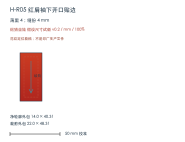
H-R05 · 红肩袖下开口贴边 裁剪数量：薄里 4原薄里4用作两袖各两侧贴边。
需要时仅扣段局部I1，不接连白袖。
选材理由：同色薄贴边用于红袖下开口，露出时与外搭衔接。
拟采用，待样布确认 · 点击衣片放大花纹、尺寸与材质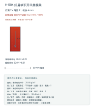
H-R06 · 红肩袖下开口搭接条 裁剪数量：红面 2＋薄里 2红面2＋薄里2，依原搭接条数量。
薄布被扣件拉伸时才局部I1；不整条加硬。
选材理由：同色面里构成独立红袖搭接，兼顾翻净与穿脱。
拟采用，待样布确认 · 点击衣片放大花纹、尺寸与材质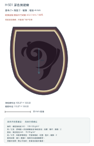
H-S01 · 深色侧裙瓣 裁剪数量：面布 2＋薄里 2，镜像面2＋薄里2；按原方向或镜像要求。
默认不加衬；先看坐姿叠片垂感。
选材理由：细斜纹承载边纹，薄里降低独立裙瓣的翻缝体积。
拟采用，待样布确认 · 点击衣片放大花纹、尺寸与材质面1＋薄里1；按原方向或镜像要求。
默认不加衬；先看坐姿叠片垂感。
选材理由：细斜纹承载边纹，薄里降低独立裙瓣的翻缝体积。
拟采用，待样布确认 · 点击衣片放大花纹、尺寸与材质原面1＋薄里1，选原允许的M5路线。
扣位局部I1，其余不加衬；与上衣独立。
选材理由：薄棉腰头承接分瓣与抽褶层，避免腰部整圈变硬。
拟采用，待样布确认 · 点击衣片放大花纹、尺寸与材质原面1＋薄里同数1均保留；这是可见粉色衬摆层，面片仍按面布计。
不加衬；如果小样过厚须另修工艺，不能在本材料表擅自删里片。
选材理由：较薄同色布层形成实际外露下摆，抽褶后先核验叠层体积。
拟采用，待样布确认 · 点击衣片放大花纹、尺寸与材质原面2＋薄里同数2均保留；这是可见粉色衬摆层，面片仍按面布计。
不加衬；如果小样过厚须另修工艺，不能在本材料表擅自删里片。
选材理由：较薄同色布层形成实际外露下摆，抽褶后先核验叠层体积。
拟采用，待样布确认 · 点击衣片放大花纹、尺寸与材质原面1＋薄里同数1均保留；这是可见白色衬摆层，面片仍按面布计。
不加衬；如果小样过厚须另修工艺，不能在本材料表擅自删里片。
选材理由：较薄同色布层形成实际外露下摆，抽褶后先核验叠层体积。
拟采用，待样布确认 · 点击衣片放大花纹、尺寸与材质原面2＋薄里同数2均保留；这是可见白色衬摆层，面片仍按面布计。
不加衬；如果小样过厚须另修工艺，不能在本材料表擅自删里片。
选材理由：较薄同色布层形成实际外露下摆，抽褶后先核验叠层体积。
拟采用，待样布确认 · 点击衣片放大花纹、尺寸与材质原面2＋薄里2；薄里M3，非裸露M4背面。
不加整条衬，保留带与尾片的垂感。
选材理由：缎面提供色带光泽，较薄的匹配里布避免翻面露白与双缎叠厚。
拟采用，待样布确认 · 点击衣片放大花纹、尺寸与材质原面1＋薄里1；薄里M3，非裸露M4背面。
独立后扣局部I1，其他位置不加衬。
选材理由：缎面提供色带光泽，较薄的匹配里布避免翻面露白与双缎叠厚。
拟采用，待样布确认 · 点击衣片放大花纹、尺寸与材质原面2＋薄里2；薄里M3，非裸露M4背面。
不加整条衬，保留带与尾片的垂感。
选材理由：缎面提供色带光泽，较薄的匹配里布避免翻面露白与双缎叠厚。
拟采用，待样布确认 · 点击衣片放大花纹、尺寸与材质原面2＋薄里2；薄里M3，非裸露M4背面。
不加整条衬，保留带与尾片的垂感。
选材理由：缎面提供色带光泽，较薄的匹配里布避免翻面露白与双缎叠厚。
拟采用，待样布确认 · 点击衣片放大花纹、尺寸与材质原面2＋薄里2；不因窄褶边自动删减。
不加衬，避免袖山接缝堆硬。
选材理由：轻薄粉色面里形成真实荷叶边，先检查抽褶后体积。
拟采用，待样布确认 · 点击衣片放大花纹、尺寸与材质